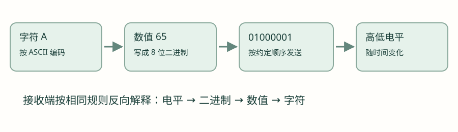
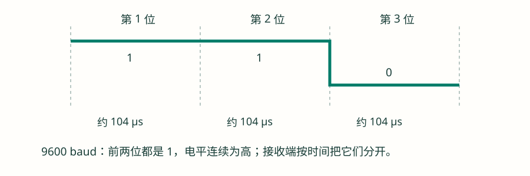
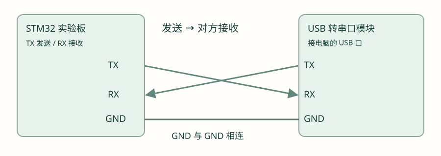
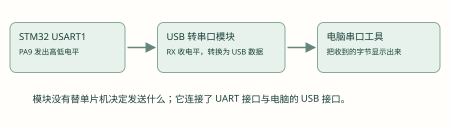
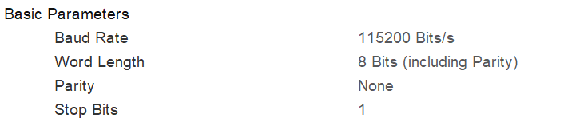
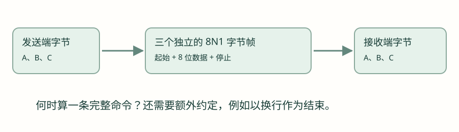
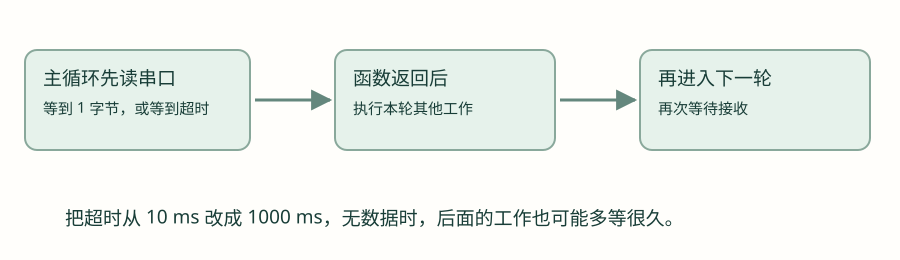

UART：从高低电平到一次完整收发
先理解信息、时间与字节帧，再跟着配置截图使用 HAL，完成发送、回显和串口控制灯。
第 1 节 · 高高低低的电平，为什么能传递信息？
GPIO 课里，程序可以把一个引脚设成高电平或低电平。现在换一个问题：如果这根引脚接到另一块板子的输入上，对方能否通过读取电平，知道我们想告诉它什么？可以，但双方必须先约定电平代表什么、按什么顺序读，以及什么时候读。
1.1 先约定 0 和 1，再组合成信息
以本章的 3.3 V 电路为例，先约定高电平表示二进制 1，低电平表示二进制 0。接收端测到的仍然是电压，芯片的输入电路负责把电压判断为高或低。低电平也是有效信号，不能理解成“没有发送”。
一个位只能表示两种状态，多个位却能组合成更多种情况。例如双方可以约定两位命令：
| 二进制组合 | 这套示例约定中的含义 |
|---|---|
| 00 | 关灯 |
| 01 | 开灯 |
| 10 | 增加亮度 |
| 11 | 降低亮度 |
这只是解释编码思想的例子，不是 UART 自带的灯控命令。同样的 01 也可以表示温度或设备编号；电平本身没有“开灯”的含义，含义来自双方的约定。
1.2 为什么一个字节能表示字符 A？
一个二进制位英文叫 bit，8 个位组成一个字节，英文叫 byte。8 个位共有 256 种组合，因此一个字节可以表示 0～255 的整数。这里暂时只传一个字节，不涉及更长整数怎样拆分。
ASCII 是一套字符与数值的对应规则。例如字符 A 对应十进制数值 65，十六进制写作 0x41，写成 8 位二进制是 01000001。它们是在用不同形式表示同一个字节。

| 字符 | 十进制数值 | 十六进制字节 |
|---|---|---|
| A | 65 | 41 |
| 0 | 48 | 30 |
| 1 | 49 | 31 |
看到串口工具显示 A，是工具把收到的数值按字符规则显示出来。若切换到十六进制显示，同一个字节就显示为 41。导线上没有传输字母的图案。
第 2 节 · 波特率：每一个位，要持续多长时间？
假设发送端一直输出高电平，接收端怎么知道这是一个 1，还是连续的两个 1？需要再加一条约定：每个符号占用固定的时间。
2.1 9600 baud 到底意味着什么？
波特率的单位是 baud，表示每秒传送多少个符号。本章普通二进制 UART 用高、低两种电平，一个符号表示一个二进制位，所以 9600 baud 可以按“每秒传送 9600 位”理解。更复杂的调制中，一个符号可能携带多个位，不能把这个等式直接搬到所有通信方式。
把 1 秒平均分成 9600 份，每份就是一个位的时间：1 ÷ 9600 秒，约为 104 微秒。微秒写作 μs，1 秒等于 1,000,000 微秒。

前两个 1 之间不用故意拉低一下。接收端按两个时间段分别读到高电平，就得到两个 1。所以波特率不是“每秒电平翻转次数”。连续发送 0 也同样需要按时间区分。
| 波特率 | 本章 UART 一个数据位的时间约为 |
|---|---|
| 1200 | 833.33 μs |
| 9600 | 104.17 μs |
| 115200 | 8.68 μs |
2.2 两边各自计时，为什么还能对得上？
UART 是 Universal Asynchronous Receiver/Transmitter 的缩写，可以理解成通用异步收发器。“异步”在这里表示没有额外送过去的一根时钟线。两端各自根据时钟计时，预先把波特率和格式设置一致，再借一次开始标记对齐接收时间。
收发端的真实时钟允许有一定误差，但不能随意不同。误差会让后面的读取位置逐渐偏移；偏到相邻位，就可能把数据读错。具体允许多少误差与芯片、配置、帧格式等有关，本章不靠一个通用百分比代替检查。
第 3 节 · 两端怎样认出一个字节的开始和结束？
知道位宽后，还要知道从哪一刻开始数。普通 UART 在数据前面加一个低电平的开始标记，叫起始位；数据后面用高电平的停止位收尾。接收端不需要提前知道第一字节会在哪一秒到达。
3.1 从空闲到起始，再到数据和停止
- 空闲：发送端暂时没发数据时，线路通常保持高电平。
- 起始：发送端拉低一个位时间。接收端发现高到低的变化，按自身配置开始定位这一帧。
- 数据：发送端依次输出数据位。接收端按时间在每一位中间附近读取电平，高记为 1，低记为 0。
- 停止：数据位结束后，发送端输出约定长度的停止高电平；接收端检查停止位，再准备接收下一字节。
把一个字节连同这些标记组成的传输单位叫一个字节帧。本章使用 8N1：8 个数据位，N 表示不使用校验位，1 表示一个停止位。起始位不写在这个简称里，但仍然存在。
3.2 “低位先发”怎样理解？
二进制 01000001 通常从最高位写到最低位。普通 UART 本章配置从最低位开始发，所以线上八个数据位依次是 1、0、0、0、0、0、1、0。把最低位叫 D0，最高位叫 D7。接收端也按这个顺序把数据放回对应位置，结果仍然是 01000001。
3.3 接收端在哪些时间点读？
用一个简化模型理解：发现起始下降沿后，在约半个位时间处确认起始低电平，再过一个位时间，来到第一个数据位中间；以后每过一个位时间，再读下一位。假设起始沿在时刻 0，第一个数据位的名义中心约在 1.5 个位时间处，第二个在 2.5 处，以此类推。实际芯片还会用多次采样等方法判断，本章先把时间位置看懂。
3.4 115200 baud 并不等于每秒 115200 字节
8N1 每个数据字节占用 1 个起始位 + 8 个数据位 + 1 个停止位，共 10 个位时间。115200 baud 下，一个位约 8.68 μs，一个字节帧约 86.81 μs。完全连续发送的理想数据速率约为 11520 字节/秒；实际还可能有字节间空闲、软件等待和其他开销。
第 4 节 · 把单片机接到电脑：TX、RX 与 GND
原理看懂后，准备独立实验。使用已能正常运行的 STM32 HAL 基础工程、一块逻辑电平匹配的 USB 转串口模块，以及电脑串口工具。本章示例选 USART1 的 PA9 作为 TX、PA10 作为 RX；实际实验板必须确认引脚可用。这个选择与手表编号相同，但不表示可以在手表现有通信线上直接加接另一个发送端。
4.1 这三个标记分别是什么？
| 标记 | 意思 | 本端在做什么 |
|---|---|---|
| TX | Transmit，发送 | 把本端的数据变成电平送出去 |
| RX | Receive，接收 | 读取对方发送过来的电平 |
| GND | 地 | 提供共同的电压参考 |

单片机 TX 接模块 RX，是因为单片机发出的电平要送进模块的接收端。反向同理。GND 相连后，双方才能用共同参考理解高低电压。这里说的是两个设备上通常的 TX/RX 功能标记；若板上标签另有定义，先查对应说明。
4.2 为什么中间需要 USB 转串口模块？

UART 与 USB 的电气和传输方式不同，不能仅靠把线连接起来就互换。模块的一端面向 UART，另一端通过 USB 接电脑。驱动识别正常后，系统会给出串口号，串口工具打开这个端口收发字节。有些开发板已自带这条转换路径，可以按板卡说明使用。
- 先确认模块的 UART 信号电平与实验板兼容，区分 3.3 V UART 接口和 RS-232 等不同电气接口。
- 实验板按自己的供电方案正常供电；本图没有要求连接模块的 VCC。完成 TX、RX 和 GND 接线。
- 在系统设备列表或串口工具中找到该模块的实际串口号；通过插拔前后对照确认，不猜一个固定 COM 编号。
- 关闭其他占用这个串口的工具，再由本次实验工具打开。
第 5 节 · 跟着截图配置 115200、8N1
5.1 选择异步模式，再核对引脚
在 CubeMX 的 Pinout & Configuration 页面展开 Connectivity，选择 USART1，将模式选为 Asynchronous（异步），硬件流控制选择不使用。USART 的名称多一个 S，是因为它还支持同步功能；本章只使用它的异步 UART 收发方式，不连接单独的同步时钟线。
在引脚图核对 PA9 显示 USART1_TX、PA10 显示 USART1_RX。其他芯片、封装或引脚分配可能不同，应以自己的板卡连接为准。GPIO 课里说的“复用”在这里有了具体对象：将对应引脚交给 USART1 硬件。本项目这两个脚使用复用推挽。
5.2 四个基本参数逐项对照

| 界面名称 | 本章选择 | 用已经学过的原理解释 |
|---|---|---|
| Baud Rate | 115200 Bits/s | 一个位约 8.68 μs |
| Word Length | 8 Bits (including Parity) | 当前无校验，八个位都用来放数据 |
| Parity | None | 本次不增加校验位，简称中的 N |
| Stop Bits | 1 | 每字节帧后有一个停止位 |
Word Length 后面写着 including Parity（包括校验）。在这类 STM32 配置中，启用校验后，所选字长里会有一位用于校验，不能还把“8 Bits + 校验”直接理解成八个数据位。第一轮实验始终使用 Parity=None，保证八个数据位的含义一致。
校验位先认识到什么程度？
可以根据数据位算出一个额外的检查位，让接收端发现部分传输错误。Even 是偶校验，Odd 是奇校验。本章先不启用它；后续需要使用时，要同时核对收发两端实际数据位数及校验设置。校验不能纠正所有错误，也不是一条应用命令的完整校验方案。
5.3 高级参数：先完成本次收发需要的设置
基本格式设置完成后，展开 Advanced Parameters。本次实验需要允许发送和接收，其余高级功能先保持下面的设置：
| 界面名称 | 本次选择 | 含义 |
|---|---|---|
| Data Direction | Receive and Transmit | 这一路串口既能接收，也能发送 |
| Over Sampling | 16 Samples | 串口硬件按每位时间内的多个采样时刻辅助判断电平，本次保持 16 倍采样设置 |
| Single Sample | Disable | 不启用单点采样设置，保持本次实验的默认接收判定方式 |
| ClockPrescaler | 1 | 这一级时钟不再分频，波特率仍由前面的 Baud Rate 设置决定 |
| Fifo Mode | Disable | 暂不启用硬件 FIFO 数据队列，先完成简单的单字节收发 |
| Autonomous Mode | Disable | 本次实验不启用自主工作模式 |
FIFO 关闭时，TxFIFO Threshold 和 RxFIFO Threshold 这两个队列阈值暂不需要调整。先完成本章的基本收发，采样、时钟和缓冲的细节再随着后续实验展开。设置完成后，确认参数区没有红色错误提示，再继续电脑端配置。
5.4 用串口调试助手，看见单片机发来的字节
推荐 波特律动在线串口助手。它把电脑上的串口收发做成网页工具。使用支持 Web Serial 的桌面浏览器，例如 Chrome；如果当前内置浏览器不支持，请在桌面浏览器中打开。下面按操作目的说明，具体控件名称和位置以工具当前界面为准。
- 先接硬件。USB 转串口模块接入电脑；模块 RX 接单片机 TX，模块 TX 接单片机 RX，双方 GND 相连。按前面接线说明确认逻辑电平。USB 转串口不等于给目标板完成供电。
- 确认端口。Windows 设备管理器的“端口（COM 和 LPT）”中查看新增设备，例如 COM5。可对照插入前后的变化；没有端口时先查数据线、USB 连接和对应转换芯片的驱动。COM 编号不是固定的，不能照抄示例。
- 选择并连接。在网页中使用选择/连接串口功能，浏览器会列出可选设备，选刚确认的转换模块。先关闭占用同一端口的其他串口工具；浏览器选择设备与按正确参数打开端口是两个步骤。
- 核对参数。本章使用 115200、8 数据位、无校验、1 停止位，流控制 None。参数与单片机一致后打开端口；若工具要求先填参数再选设备，按其流程操作。
- 先只看接收。将接收区设为文本显示。后面发送 A 的实验应出现 A；若程序只在启动时发一次，要先打开端口，再复位目标板，让那一次发送重新发生。清空接收窗口只清除电脑上的显示，不会让单片机重发。
- 再试发送与回显。等完成第 7 节回显程序后，在发送区用文本模式输入 A，关闭自动追加回车/换行和循环发送，手动发送一次。接收区出现 A 才能验证返回路径；如果工具启用了本地回显，发送内容也可能直接显示，应先关闭或区分发送与接收记录。
- 完成后关闭端口。换用另一个串口工具前先断开当前连接，避免“端口被占用”。
同一个字节，为什么一会儿显示 A，一会儿显示 41？
文本显示把字节按字符编码解释；十六进制显示把每个字节的数值写出来。接收到 0x41，文本显示是 A，十六进制显示是 41。切换接收显示格式不会改变单片机已经发出的字节。
| 发送方式 | 输入内容 | 实际发送字节 |
|---|---|---|
| 文本 | A | 41（十六进制） |
| 十六进制 | 41 | 41，也就是一个 A |
| 文本 | 41 | 34 31，是两个字符 |
| 文本并追加 CR/LF | A | 41 0D 0A，共三个字节 |
数字 1 的文本字节是 31，十六进制发送 01 则是另一个不可见控制值。控制灯实验先按规定发文本 1/0；二进制协议再使用十六进制检查。乱码先核对端口和 8N1、波特率；有接收计数却没有可见文字时，切到十六进制检查是否收到不可见字节。只会显示自己发送的内容时，先排除本地回显，再检查目标程序是否真的回传。
工具入口：波特律动串口助手；浏览器选端口与参数说明：Chrome Web Serial 文档。本教程不直接申请或操作串口设备。
至于这组配置应当怎样进入一个完整可运行的工程，需要基础工程已提供串口初始化和正常的 HAL 计时。本章在该条件下加入应用示例，代码放在独立实验的 main 初始化之后。已有工程若将串口定义拆到 usart.h，使用它提供的声明；不要额外再定义一份同名串口对象。本章不执行 Generate Code、不覆盖手表固件，也不要求现在烧录。
第 6 节 · 先学会发送：让电脑收到一个 A
6.1 先准备串口，再认识管理对象
接下来的发送代码有一个前提：独立实验工程已经完成 USART1 的初始化。配置页面里选过 115200，并不等于程序运行时已经设置了串口；初始化代码要真正执行，硬件才会按这些参数工作。
本工程把串口声明放在 usart.h，实现放在 usart.c。MX_USART1_UART_Init(void) 是本工程的 USART1 初始化函数：没有调用参数，没有返回值，把已选的波特率、收发方向等配置交给 HAL。启动流程先完成 HAL 与系统时钟等基础设置，再完成串口初始化，最后才执行本章收发代码。这里识别它们的职责和先后关系即可，时钟内部配置留到时钟章。
main.c 中包含 usart.h，找到现有的 USART1 初始化调用，把单次发送放在它之后，用本章的循环示例替换原有 while (1)，不要再嵌套一个无限循环。各版示例依次替换，不再添加一个 main 或重定义 huart1。不要把运行语句直接放在所有函数外面。本章使用 STM32U5 HAL1 接口。uint8_t 是标准头文件 stdint.h 定义的无符号八位整数类型，正好能放 0～255。UART_HandleTypeDef 是 HAL 定义的串口管理结构体类型；工程中的变量 huart1 保存本路串口的信息。调用时传 &huart1，是把这个对象的地址交给函数，让函数知道操作哪一路串口。先认识用途，不需要现在展开全部成员。
6.2 发送函数：先读懂接口，再调用
HAL_UART_Transmit 的作用是：从内存取出指定数量的数据，通过选定的串口发送。它是阻塞式函数，主流程要等到发送完成、超时或出错后，才会执行调用后面的语句。下面先看库头文件中的声明；这是接口说明，不需要抄一份函数实现。
HAL_StatusTypeDef HAL_UART_Transmit(
UART_HandleTypeDef *huart,
const uint8_t *pData,
uint16_t Size,
uint32_t Timeout);最前面的 HAL_StatusTypeDef 是返回值的类型；圆括号内是四个参数。huart、pData、Size、Timeout 是库在声明中使用的参数名，调用时按位置填入自己的值。
| 位置与声明 | 本例填写 | 实际告诉函数什么 |
|---|---|---|
| 1 · UART_HandleTypeDef *huart | &huart1 | 使用 USART1 的管理对象。星号表示这里要一个指针，取地址符 & 把已有对象的地址交给函数。 |
| 2 · const uint8_t *pData | &byte | 从变量 byte 的地址开始读取待发送数据。const 表示函数通过这个参数只读数据；不是在这里填入数据值本身。 |
| 3 · uint16_t Size | 1 | 本次读取并发送 1 个数据元素。本章固定 8N1，一个元素就是一个字节。uint16_t 是无符号 16 位整数类型。 |
| 4 · uint32_t Timeout | 100 | 超时参数为 100 毫秒。uint32_t 是无符号 32 位整数类型。它限制等待，不是发送间隔，也不设置波特率。 |
HAL_StatusTypeDef 是 HAL 定义的状态枚举类型。用它声明变量 status，就能保存这次函数返回的状态。status 这个名字可以自己取，HAL 的枚举常量使用库中规定的名字：
| 返回状态 | 怎样理解 |
|---|---|
| HAL_OK | 本端本次发送正常完成。 |
| HAL_TIMEOUT | 等待过程中触发超时，本次要求的发送没有正常完成。 |
| HAL_BUSY | 这一路发送操作正忙，本次请求未按正常流程开始。 |
| HAL_ERROR | 本次操作出现错误，需检查参数或具体错误原因。 |
读这一行时，可以先把“函数调用”和“保存状态”拆开想：HAL_UART_Transmit(...) 负责发送；左边的 HAL_StatusTypeDef status = 把返回状态存起来。现在再看完整调用。
第一步 · 放在独立实验 main 的串口初始化之后，只发送一次
uint8_t byte = 'A';
HAL_StatusTypeDef status = HAL_UART_Transmit(&huart1, &byte, 1, 100);
if (status == HAL_OK) {
/* 本次本端发送完成。 */
} else {
/* 先在调试器里查看 status，再检查初始化与超时条件。 */
}第一行用字符常量 A 给一个字节赋值；函数从 byte 的地址取走一个字节，并让串口硬件按设定波特率发送。程序不需要自己每隔 8.68 μs 调用一次 GPIO 写电平。
6.3 电脑没赶上第一次发送怎么办？
只发一次，可能发生在电脑打开串口之前。为了便于观察，可以在主循环里每隔约一秒发送一次。GPIO 章已介绍 HAL_Delay，它的单位是毫秒；这里等待的是两次发送之间的间隔，波特率仍为 115200。
在写循环前，先回顾等待函数 HAL_Delay(uint32_t Delay)：参数 Delay 是等待的毫秒数，没有返回值。HAL_Delay(1000) 表示主流程在这里等待约 1 秒，再继续往下执行。它依赖已工作的 HAL 时间计数；本章只在主循环调用，中断里能否使用将在下一章单独解释。
独立 HAL 实验 · 替换前一步示例，不连续叠加多个无限循环
uint8_t byte = 'A';
while (1) {
HAL_StatusTypeDef status = HAL_UART_Transmit(&huart1, &byte, 1, 100);
if (status != HAL_OK) {
/* 在这里观察错误状态。 */
}
HAL_Delay(1000);
}预期现象：文本窗口陆续出现 A；切到十六进制接收，同一批数据应显示 41。没有换行时，多个 A 会接在一行，这不是串口出错。若工具开启了自动换行显示，其排版也可能不同。
6.4 从一个字节增加到一组字节
数据有多个字节时，可以放在数组里。数组名作为参数会提供首元素地址；本章先用明确列出的三个字节，每个字符都能直接对应到接收窗口。
第二步 · 发送三个字节；这是数组，没有自动附加字符串结束符
uint8_t text[] = {'A', 'B', 'C'};
HAL_StatusTypeDef status = HAL_UART_Transmit(&huart1, text, 3, 100);接收应为 ABC，十六进制为 41 42 43。再换成 C 字符串：
第三步 · 字符串数组有末尾的零，本次不发送它
uint8_t text[] = "ABC";
HAL_StatusTypeDef status = HAL_UART_Transmit(&huart1, text, sizeof(text) - 1, 100);这个数组实际有四个元素：A、B、C 和结尾的 '\0'。sizeof(text) 在这里得到整个数组占用的字节数 4，减一后发送 3 个可见字符。这个写法用于这里的实际数组；如果函数参数已经变成指针，不能用 sizeof(指针) 当成字符串长度。
6.5 回车、换行也要发送字节
\r 是回车字符，ASCII 数值 0x0D；\n 是换行字符，数值 0x0A。很多串口工具能用这两个控制字符把下一条内容显示到新行。它们不会显示成字母 r、n。
第四步 · 共发送七个字节，末尾是 0D 0A
uint8_t text[] = "hello\r\n";
HAL_StatusTypeDef status = HAL_UART_Transmit(&huart1, text, sizeof(text) - 1, 100);在文本接收与十六进制接收之间切换，核对 68 65 6C 6C 6F 0D 0A。这里不需要先学习 printf 重定向；先确认最直接的发送函数工作，再增加格式化输出。
第 7 节 · 接收与回显：电脑发什么，就把什么发回去
7.1 读取引脚电平，与接收一个字节有什么不同？
GPIO 的读取函数只告诉程序“这个时刻是高还是低”。UART 硬件已经按波特率和字节帧格式解释了一串电平，接收函数取回的是完整的数据字节。接收字符 A 时，程序应得到 65，而不是某一瞬间的高或低。
HAL_UART_Receive 用来等待接收指定数量的数据。它的四个参数依次是串口对象地址、接收存储区地址、要接收的数量、超时毫秒数。本章固定 8N1，数量 1 表示接收一个字节。
接收函数的声明如下。它与发送函数的关键区别是：发送从存储区读数据，接收向存储区写数据。因此接收存储区不能是只读区域，参数中也没有 const。
HAL_StatusTypeDef HAL_UART_Receive(
UART_HandleTypeDef *huart,
uint8_t *pData,
uint16_t Size,
uint32_t Timeout);huart 仍然选择串口管理对象，pData 这次指向接收存储区；Size 是要求接收的元素数量，Timeout 是超时毫秒数。这是阻塞式接收：本次尚未收齐时，主流程停在函数内部等待；收到所需数量、超时或出错后才返回。它不会一直在后台替程序收数据。
| 参数 | 作用 |
|---|---|
| &huart1 | 在哪一路串口接收 |
| &rx | 把收到的字节写入 rx |
| 1 | 这次需要一个字节 |
| 1000 | 等待的超时参数为 1000 ms |
函数返回值仍然是 HAL_StatusTypeDef。数据放进 rx，操作是否成功看 status。这是两个不同的结果，不要把 HAL_OK 当成收到的数据，也不要把 rx 等于 0 当成接收失败。0x00 也可以是一个合法数据字节。
第一步 · 单次接收示例，可在调试器观察 rx 与 status
uint8_t rx = 0;
HAL_StatusTypeDef status = HAL_UART_Receive(&huart1, &rx, 1, 1000);
if (status == HAL_OK) {
/* 此时 rx 中有本次收到的一个字节。 */
} else if (status == HAL_TIMEOUT) {
/* 本次没有在等待条件内完成接收，不能处理旧 rx。 */
} else {
/* 检查其他错误或忙状态。 */
}如果把接收数量改成 3，只发送一个字节，函数不会因为“至少来了一点数据”就报告三个字节全部成功；还可能继续等待并超时。缓冲区内容也不会在失败时自动变成一条有效的新消息。第一轮坚持一个字节，先减少需要排查的条件。
7.2 回显：将收到的字节原样发回
回显是一个闭环实验：电脑发一个字节，单片机接到后，再用发送函数把同一个字节发回电脑。先不添加命令解析，也不改动内容。
第二步 · 单字节、手动低速发送的回显实验
while (1) {
uint8_t rx = 0;
HAL_StatusTypeDef status = HAL_UART_Receive(&huart1, &rx, 1, 100);
if (status == HAL_OK) {
HAL_StatusTypeDef tx_status = HAL_UART_Transmit(&huart1, &rx, 1, 100);
if (tx_status != HAL_OK) {
/* 本次回传失败，单独检查发送状态。 */
}
} else if (status != HAL_TIMEOUT) {
/* 没数据时超时属于本实验预期；其他状态另行检查。 */
}
}- 电脑发送区选择文本模式，只填 A；关闭自动附加回车/换行，关闭本地回显。
- 点击发送一次，接收区应出现从单片机返回的 A。
- 将接收显示切为十六进制，应该看到 41。
- 再将发送模式切为十六进制，发送 00，检查是否回传 00；使用文本窗口观察这个字节可能什么也看不见。
本地回显通常指串口工具把自己准备发送的内容直接显示出来，即使对端没有回传，也可能看见字符。实验时关闭它，才能用接收区判断单片机是否真的回了数据。
第 8 节 · 一个简单约定：串口控制灯
现在结合 GPIO 的点灯实验。本节仍使用独立实验板，PA5 接高有效 LED，已经配置为推挽输出。先约定命令：收到字符 1，灯亮；收到字符 0，灯灭。两端都按这个约定，才知道字节要产生什么动作。
| 电脑的发送方式 | 发出的字节 | 本节程序如何理解 |
|---|---|---|
| 文本发送 1 | 31 | 开灯命令 |
| 文本发送 0 | 30 | 关灯命令 |
| 十六进制发送 01 | 01 | 不是本节约定的开灯字符 |
| 十六进制发送 31 | 31 | 与文本字符 1 相同 |
8.1 先把字符与数值区分清楚
C 里 1 是数值 1；'1' 是字符常量，按本章 ASCII 约定对应数值 49，即 0x31。发送区看起来都写着 1，但发送模式不同，真正的字节可能不同。单片机只看收到的字节，不知道电脑按钮上选择了哪一种显示方式。
下面要复用 GPIO 章的 HAL_GPIO_WritePin，先回顾它的三个参数：第一个 GPIOA 选择 A 组，第二个 GPIO_PIN_5 选择第 5 号引脚，第三个 GPIO_PIN_SET 写高电平，换成 GPIO_PIN_RESET 就写低电平。它没有返回值。本实验 PA5 已配置为推挽输出，接的是高电平点亮的 LED，因此 SET 点亮、RESET 熄灭。
第一版灯控 · 只对 1、0 两个字符动作；其他字节暂时忽略
while (1) {
uint8_t rx = 0;
HAL_StatusTypeDef status = HAL_UART_Receive(&huart1, &rx, 1, 100);
if (status == HAL_OK) {
if (rx == '1') {
HAL_GPIO_WritePin(GPIOA, GPIO_PIN_5, GPIO_PIN_SET);
} else if (rx == '0') {
HAL_GPIO_WritePin(GPIOA, GPIO_PIN_5, GPIO_PIN_RESET);
}
}
}这段代码只用了已经介绍的接收函数、字符比较和 GPIO 写函数。先完成灯控，再增加明确的回复。下面在上面的 else-if 链末尾添加一个 else，表示收到未约定的字符：
增量修改 · 此 else 紧接上一个示例的 else if；不能单独粘贴到函数外
else {
uint8_t reply[] = "unknown\r\n";
HAL_StatusTypeDef tx_status = HAL_UART_Transmit(
&huart1, reply, sizeof(reply) - 1, 100);
if (tx_status != HAL_OK) {
/* 观察本次回复的发送错误。 */
}
}8.2 为什么发一次 1，会出现额外回复？
若串口工具自动附加回车和换行，点击一次“发送 1”，真正发出的可能是 31 0D 0A 三个字节。主循环先处理 31 点灯，又把 0D、0A 分别当作未知字符，于是出现两条 unknown。先去十六进制窗口核对实际字节，不要先认定串口乱发。
一个改进是明确约定允许忽略回车/换行，再在未知字符分支前加上判断；另一种是改为整行命令，遇到换行才处理。整行接收需要缓冲区、长度上限和结束条件，会在手写协议章节继续。

第 9 节 · 程序在等串口时，其他工作怎么办？
前面的 HAL 收发函数采用轮询等待，也常叫阻塞式调用。执行到接收函数时，程序需要等到要求的数据到达，或遇到超时、错误等返回条件，才会继续执行函数后面的代码。

9.1 做一个能看出等待的实验
将 GPIO 的翻转函数放在每次接收返回后，先把接收超时设为 1000 ms，再改成 10 ms。在无输入时观察 LED 翻转间隔，比较主循环被等待拖住的程度。
本实验复用 HAL_GPIO_TogglePin(GPIOA, GPIO_PIN_5)：两个参数依次选择引脚组和引脚号，没有返回值；每调用一次，就把输出状态从高变低或从低变高。先确认 PA5 仍为输出模式，再用灯的变化观察接收函数什么时候返回。
观察等待的独立实验 · LED 的变化间隔会受串口输入影响
while (1) {
uint8_t rx = 0;
HAL_StatusTypeDef status = HAL_UART_Receive(&huart1, &rx, 1, 1000);
HAL_GPIO_TogglePin(GPIOA, GPIO_PIN_5);
if (status == HAL_OK) {
/* 数据提前到达时，等待也可能提前结束。 */
}
}没有数据时，每次大约等到超时才翻转；有数据提前到达时，函数可能提前返回。所以它也不能当作稳定的 LED 定时程序。10 ms 同样不能简单视为适用于所有系统的最终方案，串口输入量和其他工作的时间要求还要一起考虑。
9.2 怎样自然接到下一章？
可以先提出一个需求：程序继续处理灯、按钮和其他工作，串口有数据时再通知程序。下一章会从“通知”讲到中断，再引入中断接收接口和回调。之后需要更大吞吐量时再学习 DMA。此处不用提前记住那些函数名，先确认轮询等待带来了什么限制。
能不能像点灯一样，手动切 GPIO 实现 UART？
原理上可以按同样位宽输出起始、数据和停止电平，也可以按时间读取输入。但 115200 baud 的位宽只有约 8.68 μs；普通毫秒延时不能直接实现，其他工作也可能扰乱时序。手动实现的实验放在学过定时器之后进行，本章先使用 UART 硬件完成收发。
回到手表 · 追踪 STM32 与 CH582M 的 UART 连接
独立实验通过 USB 转串口模块与电脑通信，手表实际把另一端换成 CH582M。读 STM32 的 usart.c，可以对照到 USART1、115200、8 位、无校验和 1 个停止位。
| 方向 | STM32 端 | CH582M 端 |
|---|---|---|
| STM32 发送 → CH582M 接收 | PA9 / USART1_TX | PA8 / UART1_RX |
| CH582M 发送 → STM32 接收 | PA10 / USART1_RX | PA9 / UART1_TX |
两颗芯片都有一个叫 PA9 的脚，但它们属于不同芯片。画接线图和读代码时，要写清“STM32 的 PA9”还是“CH582M 的 PA9”，不能仅凭相同编号判断连接关系。CH582M 收到字节后如何发到手机，留到无线通信章节。
项目为什么勾选了 USART1 中断？
这里能看到 USART1 global interrupt 已启用，抢占优先级 5、子优先级 0。当前项目在接收路径中会用到中断，下一章再结合真实处理流程说明这些设置。不要把优先级 5 当作所有串口实验都应该照抄的固定值；只勾选这一项，也不等于已经完成接收缓冲和错误处理。
排错与验收 · 先看字节，再猜原因
| 现象 | 先做的检查 | 对应的解释 |
|---|---|---|
| 完全收不到 | 串口号是否正确、是否打开，TX/RX/GND 与供电是否正确，调用状态是否成功 | 本端发送完成与对端接线正确是不同条件 |
| 稳定乱码 | 两端波特率、8N1 是否一致；查看十六进制数值 | 可能读错位，也可能只是把非文本数据当字符显示 |
| 只在复位后发一次，电脑看不到 | 工具是否在发送之前打开；先改成低速周期发送 | 数据可能在工具开始接收前已经发完 |
| 工具收到两份相同内容 | 是否同时开启本地回显和单片机回显 | 显示两次不必然表示线上发送了两次 |
| 发一次命令多出未知回复 | 发送区是否自动添加 0D、0A | 一次点击可能发送多个字节 |
| 单字节正常，连续大量发送丢字节 | 接收等待、回传等待与缓冲条件 | 本章单字节回显未解决连续接收系统问题 |
分阶段验收
- 能用自己的话解释波特率、位时间，说明连续两个 1 为什么不用两次翻转。
- 能在图上标出起始、D0～D7、停止，计算 8N1 一个字节帧占多少位时间。
- 完成文本 A ↔ 十六进制 41 的显示对照，再区分字符 '1' 与数值 1。
- 能说明发送函数四个参数和状态返回值，并指出 HAL_OK 不证明对端已收到。
- 低速手动完成单字节回显，再实现 1 点灯、0 灭灯。
- 观察并解释自动回车/换行、接收超时对结果的影响。
暂时没有硬件时，先完成页面演示、字节预测与代码阅读；接线、实际电压、连续收发和等待时间的结论，需要之后通过真机实验补齐。
检查理解
参考与继续阅读
参考用于核对概念和接口；不同系列、库版本与开发板的参数不可直接互换。课程按本仓库现状说明项目，完整资料索引见 来源与版本。